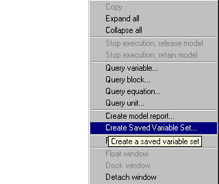

The values of all Model Variable and Selectors at a particular simulation time can be saved for later re-use; these values are stored in Saved Variable Sets.
Saved Variable Sets are used
to provide good initial guesses for initialisation calculations (over-riding the default values for the Variables taken from their Variable Type). This is done in the PRESET section.
during a simulation to change the values of the Variables and Selectors to those stored in the Saved Variable Set.
Saved Variable Sets are created from a simulation activity either
using the SAVE elementary task in a Schedule
right clicking on the Execution Window and selecting Create Saved Variable Set ..... from the short-cut menu. Note that this is only possible if a license was retained following the execution of the simulation activity:

Any new Saved Variable Set created during a simulation activity will be stored in the Results folder of the Execution Case. In order to use it in any subsequent activity the Saved Variable Set must be copied into the working project where it will appear in the Saved Variable Sets entity group.